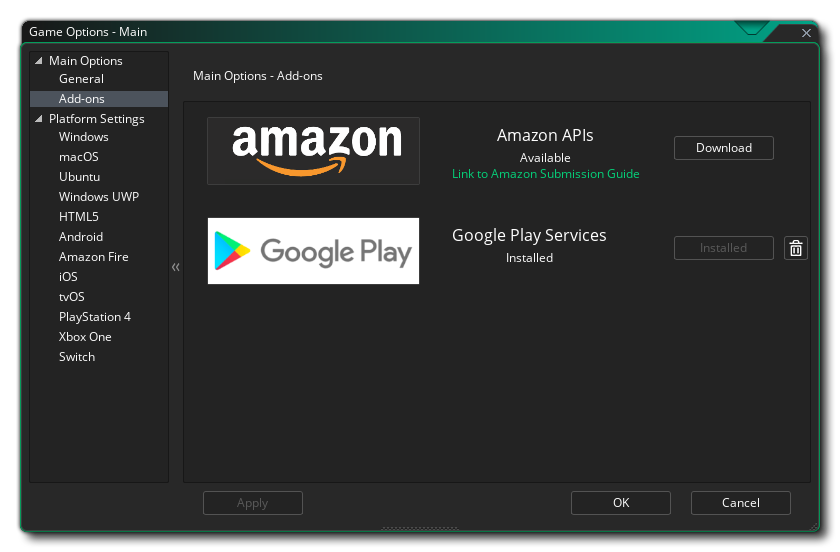

Les options de jeu sont divisées en deux sections, Options principales et Paramètres de la plate - forme. Les détails des principales options sont donnés dans les sections ci-dessous:
La fenêtre Options générales vous permet de définir certains éléments qui affecteront le jeu, quelle que soit la plate-forme sur laquelle il est conçu. La fenêtre comprend les sections suivantes:
- Utiliser DnD™ comme type de script par défaut: Lorsque cette option est cochée, tous les nouveaux scripts et événements d'objet seront ouverts à l'aide de l'éditeur DnD™ plutôt que de l'éditeur de code.
- Jeu d'images par seconde: cette valeur définit le nombre GameMaker Studio 2 d'images par seconde que GameMaker Studio 2 doit essayer de gérer pour maintenir vos jeux en cours d'exécution. Cette valeur représente le nombre de fois que la boucle de jeu s'exécutera en une seconde (une seule boucle de jeu est considérée comme une "image" unique) et est définie sur une valeur par défaut de 30, bien que 60 soit également souvent utilisé. Il existe de nombreux arguments sur la vitesse idéale de la salle, mais la réponse dépend du type de jeu que vous créez, de la taille de la salle, du nombre d'instances et de l'intensité du code. Par exemple, si vous avez une grande pièce et une vitesse de 30, le jeu peut sembler "saccadé" car plus la zone que vous regardez est grande, plus il est facile pour l’œil de percevoir une faible vitesse de la pièce, mais si le jeu est intensive, le réglage de la vitesse de la pièce à 100 risque de provoquer un "décalage" du jeu lorsque le nombre de fps chute en raison de la quantité de traitement effectué. Faites donc attention à cette valeur et essayez de toujours l’ajuster à vos besoins.
- Couleur de dessin par défaut: Couleur par défaut pour le texte dessiné ou les forums (et autres éléments) lorsqu'aucune couleur n'a été définie à l'aide de code.
- Générer des images de projet: Cliquez sur cette option pour ouvrir l'outil Project Image Generator.
- Date de début du projet: date à laquelle le projet a été lancé.
- Durée d'utilisation du projet: durée écoulée depuis le lancement du projet.
- GUID du projet: identifiant unique créé pour chaque projet dans GameMaker Studio 2. Si vous souhaitez modifier cela, vous pouvez cliquer sur le bouton Créer un nouveau GUID pour en générer un nouveau.
- Générer des mipmaps pour des pages de texture distinctes: grâce à cette option, GameMaker Studio 2 créera des mipmaps pour les images - objets ayant marqué l'option Séparer la page de texture dans les paramètres de texture de l'éditeur d'image-objet. L'activation du mappage signifie que la page de texture d'origine de l'image-objet doit être mise à l'échelle et filtrée en plusieurs résolutions dans le fichier de texture. Ceci est normalement désactivé, mais si vous utilisez des vues pour effectuer un zoom avant ou arrière sur de grandes zones de la salle de jeux ou si vous travaillez avec un jeu en 3D, activez cette option, puis utilisez les fonctions de mappage Mip pour ajuster la jeu traite avec les différents niveaux de mipmap. Notez que si vous n'indiquez pas les images-objets comme utilisant des pages de texture individuelles, vous pouvez toujours activer le mappage par groupe de textures à partir du gestionnaire de groupes de textures. Cette option est désactivée par défaut.
- Identifiant Steam: Si vous créez un jeu qui doit être distribué via Steam, vous devez fournir l' identifiant de l'application Steam ici. Assurez-vous que vous avez ajouté le chemin d'accès au kit SDK de Steam Works dans les préférences de la plate - forme lorsque vous utilisez cette option, et assurez-vous que tout est configuré correctement sur le tableau de bord de Steam Works.
- Autoriser les statistiques de jeu anonymes: activez ou désactivez l'envoi de données d'analyse de jeux GameMaker Studio 2 à YoYo Games, à partir de l'EDI et des jeux que vous créez. Lorsque cette option est activée, elle envoie des données anonymes sur le PC exécutant le programme / jeu (taille du moniteur, processeur, processeur graphique, mémoire, etc.) et les exécutables finaux envoient également des données sur le nom du jeu. Ces données sont en train d'être accumulées afin que YoYo Games puisse mieux cibler ses services en fonction des besoins de l'utilisateur. À l'avenir, YoYo Games espère pouvoir mettre ces données à la disposition des développeurs (un peu comme Steam fait avec son logiciel Steam Software Survey ). Pour plus de détails, voir la partie 6 de la section Informations que nous recueillons de la politique de confidentialité des jeux YoYo. Cette option est disponible uniquement pour les utilisateurs disposant d'une licence payante (bureau, mobile, HTML5, UWP ou console) et les utilisateurs disposant d'une licence d'évaluation envoient toujours des données statistiques anonymes.
- Activer le contrôle de la source: Si vous souhaitez que le projet soit sous SCM (Gestion du contrôle de la source), vous devez le vérifier. Il est désactivé par défaut (voir ici pour plus d’informations sur le contrôle de source).
- Auteur: nom de l'auteur du jeu (ou de l'éditeur ou du studio).
- Dernier projet modifié: Cette section affiche simplement l'horodatage de la dernière modification du projet (cette opération n'est pas modifiable).

GameMaker Studio 2 nécessite l' GameMaker Studio 2 certains modules complémentaires en tant qu'extensions de votre projet si vous souhaitez utiliser des fonctionnalités étendues telles que les classements ou les achats intégrés aux applications sur des plates-formes spécifiques. En cliquant sur le bouton " Télécharger ", l'extension sera téléchargée et installée dans le projet en cours, prête à être utilisée.

D'autres options de jeu seront également disponibles dans l'arborescence des ressources en fonction des plates-formes cibles disponibles pour la licence dont vous disposez et toutes ne sont peut-être pas disponibles ou visibles. Les options de plate-forme suivantes existent: